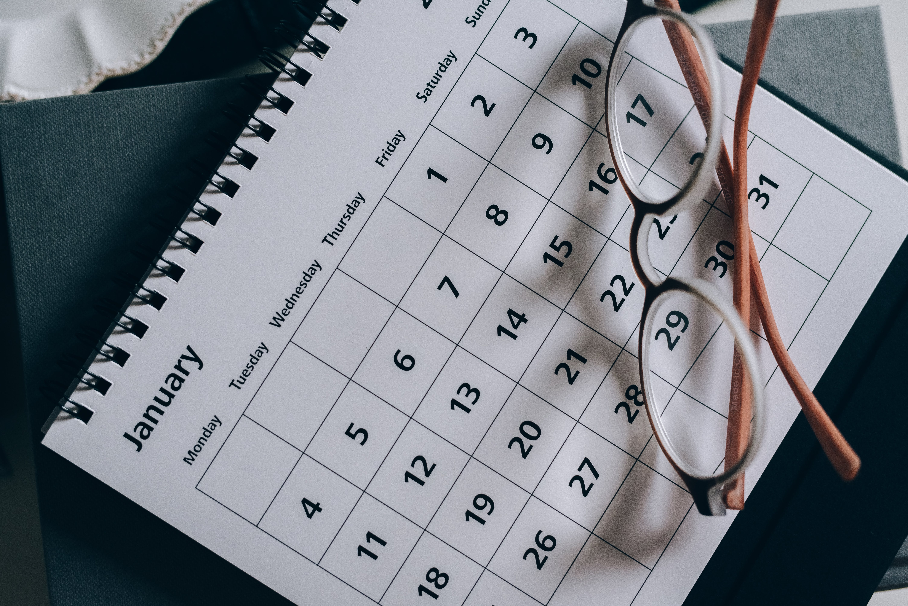

Helpful Links
ThomasJFrank
https://thomasjfrank.comCalndars can be very useful tools if you know how to these them properly. Here you can find tips on how you can maximize what you get from your own calendar.
National Park Service
https://www.nps.gov/articles/birding-for-beginners.htmBirdwatching is certainly one of the greatest pasttimes. Being able to watch animals will get you reconnected with nature wihle also being simply fun to do aswell. Here you can find tips on how you can begin birdwatching.

TheBirdHouseChick
https://www.thebirdhousechick.com/If your interested in birdwatching one of the best things you can do is installing birdhouses, baths, and more right in your backyard. Getting the birds to come to you will make finding birds far easier. Here you can purchase the perfect bird accessory for your backyard.
PetSmart
https://www.petsmart.com/bird/live-birds/If you want to do more than just watch birds then getting a pet is a great choice. A feathered friend you can play with is often an excellent companion for avid bird-interested people. Here you can find options for your very own pet bird.
Binoculars
https://binoculars.comOne of the essential tools for birdwatching is binoculars. They will allow you to see more from greater distances, meaning you can get better views of your favorite birds. Here you can purchase the best binoculars for your needs.